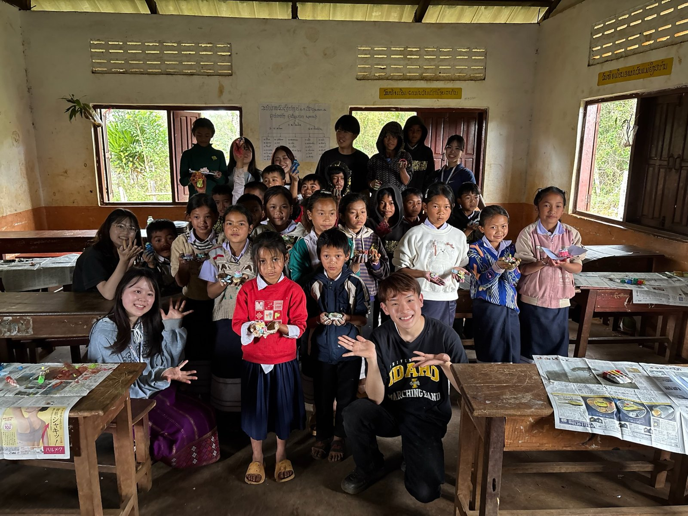
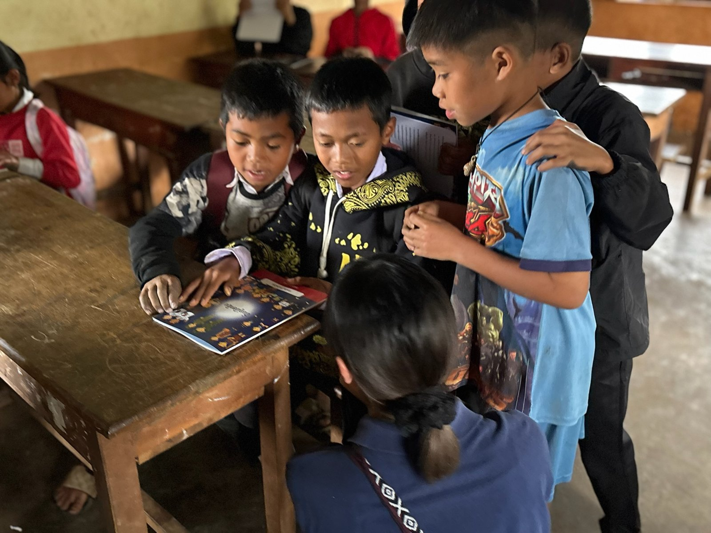
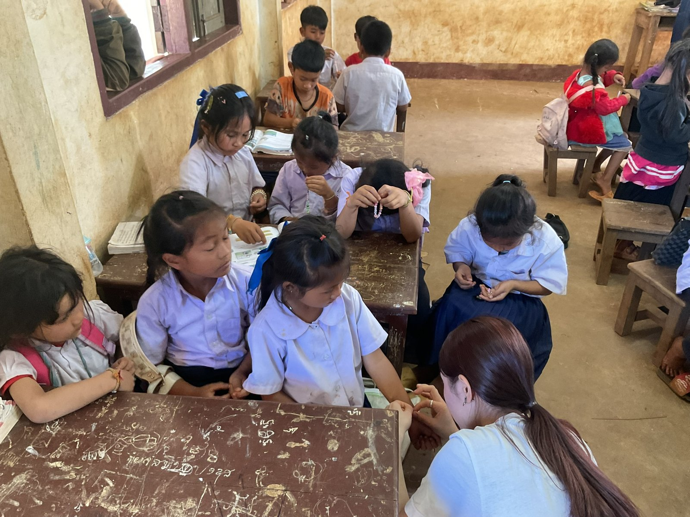

食育
身近な食材や栄養を題材に、食べることと暮らしのつながりを考えます。
EDUCATION
2026年度は、食育・衛生・環境をテーマにしたテキストブックを制作しています。10月に物語のストーリーが完成し、翻訳や現地での活用に向けた準備を進めています。

2026年10月時点
2026年度は、食育・衛生・環境をテーマにしたテキストブックを制作しています。10月に物語のストーリーが完成し、原稿を整え、翻訳や現地での活用に向けた準備を進めています。
子どもたちが物語を楽しみながら、日々の生活に結びつく学びに出会える教材を目指しています。物語と学習ページを組み合わせ、イラストなどを通して分かりやすく伝えることを大切にしています。
身近な食材や栄養を題材に、食べることと暮らしのつながりを考えます。
手洗いなど、毎日の生活の中で実践できる衛生習慣を学びます。
ごみの扱いなど、身の回りの環境について考えるきっかけをつくります。
現地の暮らしや文化に合った表現を考え、ラオス語への翻訳や、テキストブックとワークショップをつなげた活用に向けて準備しています。
制作の進捗を見る →Smile F LAOSでは、コーヒーの売上の一部を活用しながら、ラオスのこどもたちの 「学びの選択肢」を広げることを目的とした教育支援を行っています。
支援の内容は、年ごとに現地の先生やこどもたちの声を聞きながらアップデートしており、 物を届けるだけでなく、ワークショップやスタディツアーを通した「双方向の学び」を大切にしています。
エフラオの活動は、「コーヒー」と「教育支援」がぐるっと循環するモデルになっています。
これまでには浄水器やコンポストの設置支援、職業図鑑の制作・寄贈などを行ってきました。
ラオスの子どもたちは、本や文字に触れる機会が非常に限られているという課題を抱えています。 書店や図書館が少ないだけでなく、学校で使う教科書さえ十分に行き渡っていません。 調査によると、生徒一人ひとりに教科書が行き届いている学校は、全国の約1割程度とされています。
また、ラオス国立図書館の蔵書数は近隣国と比べて少なく、財政状況により本の購入も限られているのが現状です。
NPO法人「ラオスのこども」とは？
「ラオスのこども」は、ラオスの子どもの教育環境の向上を目的に1982年から活動している日本のNGOです。 ラオス語の創作絵本や昔話、生活に関する本などを現地で出版し、全国の小中学校に届ける取り組みを続けています。
出版や図書館づくりに加えて、本の管理や活用の仕方を伝える「読書推進セミナー」、 図書室と安全な遊び場を備えた「子ども文化センター」の運営など、 子どもたちが本や表現活動と出会える場を広げています。
エフラオも、こうした先行する取り組みから多くを学びながら、 自分たちらしい教育支援の形（テキストブックやワークショップなど）を考え続けています。


どんな支援が必要かは、現場で活動する先生やこどもたちが一番知っています。 スタディツアーやオンラインでの対話を通じて、「一緒に考える」ことから始めています。
日本側だけの「やりたいこと」をそのまま持ち込むのではなく、 現地の文化や生活に合う形を一緒に探すことを大切にしています。
支援する／されるという一方通行ではなく、日本の学生もラオスのこどもたちから 多くのことを学ばせてもらっています。その気づきを今後の活動にも活かしていきます。
教育支援は、毎年12月に行うスタディツアーと強く結びついています。 ツアーの中で行うワークショップやホームステイを通じて、こどもたちの様子や 学校の状況を直接見ることができ、その経験が次年度以降の支援内容の見直しにつながります。
「目の前にいるこどもたち」の顔を思い浮かべながら、コーヒー販売や支援の企画を進めていくことが、 エフラオらしい教育支援のあり方だと考えています。
活動への参加や、コーヒー販売のご相談はこちらから。